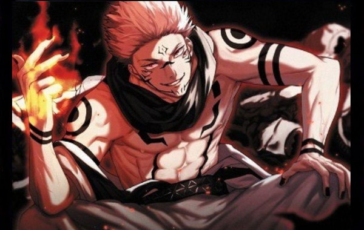

Jujutsu Kaisen é um mangá japonês escrito e ilustrado por Gege Akutami, serializado na Weekly shonen Jump desde de 5 de março de 2018. Os capitulos individuais são compilados em volume tankobon, e publicados pela Shueisha desde julho de 2018. A série é licenciada e publicada no Brasil pela editora Panini.
Rank de Maldições do anime Jujutsu Kaisen
Satoru Gojo(五 ご 条 じ ょ う 悟 さ と る Gojō Satoru)é um dosprotagonistasdeJujutsu Kaisen. Ele é professor da Escola Secundária Jujutsu da Prefeitura de Tóquio.
Satoru Gojo é um homem alto, muito mais alto que seus alunos, e aparentemente é considerad atraente por muitas mulheres. Ele tem cabelo branco quegeralmente é espetado para cima, mas Gojo o deixa solto quando está em um traje mais casual. Gojo tem olhos azuis brilhantes, mas eles normalmente estão cobertos por sua venda prea característica ou por um par deóculos escuros. Enquanto trabalha, Gojo usa uma jaqueta preta degola alta com calças combinando e botas pretas. No passado, Gojo usava bandagens sobre os olhos em vez desua simples venda. Ele tem vários trajes casuais diferentes que geramente incluem caisas demangas compridas e calças compridas para ir à praia e sunga preta.
Veja personalidade de Satoru GojoNível Geral de Habilidade: Satoru é considerado um dos feiticeiro mais forte da série, contendo imensas quantidades de Energia Amaldiçoadas e uma técnica perigosamente poderosa. Ele também demostrou ser capaz deutiizar a écnicade Expansão de Domínio. Sua classificação de feiticeiro é de nivel Supremo.
Gojo demonstrou ser bastantetático e ser capaz dedescobrir o queseu oponenteestá planejando com informações suficientes. Ele tambèm se mostrou exatamenteo que fazer paracontra-atacar suas técnicas ederrotá-los.
Veja seus poderes de feiticeiticeiro.
Megumi é um menino alto, de cabelos escuros e olhos verdes claros. Ele usa o uniforme padrão da Escola Secundária Jujutsu da Prefeitura de Tóquio, que consiste em uma camisa de mangas compridas e um colarinho alto de cor escura, calças e sapatos escuros.
Jujutsu de Megumi.Já o 2º grau pode ser considerada as pessoas que estão acima da média em relação aos Jujutsu. Além do mais, os feiticeiros mais fortes estão entre o grau 1 e 2, ou seja, nenhum deles pode ser levado na brincadeira. Assim, qualquer um que esteja em grau 2 tem permissão para fazer missões solo.
Agora aqui, podemos dizer que é a classe dos intermediários. No entanto, todos eles ainda podem ser considerados novatos e sem muito poder de combate. Aliás, alguns dos feiticeiros dessa classe é nossa querida Miwa, Kugisaki e Mai. Aliás, pudemos acompanhar a força dessas três garotas no anime, mais precisamente no arco da escola Kyoto Vs Tóquio. Onde, todas elas se destacaram com suas habilidades e poderes.
É o protagonista principal de Jujutsu Kaisen. Ele está no primeiro ano da Escola Secundária Jujutsu da Prefeitura de Tóquio.
Yuji é um adolescente muscuoso com grandes olhos castanhos claros e cabelo preto e rosa espetado. Depois decomer o dedo e consequentemente se tornar um hospedeiro para Sukuna, ele recebe um segundo par de olhos que só se abrem quando Sukuna controla o corpo de Itadori Yuji.
No início da série, Yuji usava uma jaqueta com capuz de cor clara, calças pretas de bainha alta e sapatos brancos. No anime, porém, a cor de suas calças era jeans e ele usava sapatos vermelhos
Quando Yuji se matriculou na Escola de Jujutsu da Prefeitura de Tóquio, ele começou a usar sua versão do uniforme: uma camisa preta de manga comprida que lembra um gakuran (Uniforme escolar Japônes) sobre um moletom vermelho, calças pretas e sapatos vermelhos.
Em uma "Certa batalha", ele ganha uma cicatriz entre seus dois olhos. Não se sabe se ainda pode ser revertido com uma técnica reversa.
Ryomen Sukuna (両りょう面めん宿すく儺な, Ryomen Sukuna) é um dos principais antagonistas de Jujutsu Kaisen. Atualmente ele é conhecido como o Rei das Maldições
Sua aparência anterior ´descrita como um demônio com quatro braços e duas faces. Atualmente, ele parece semelhante ao hospedeiro em que está(Yuji Itadori), mas com cabelo espetado e com marcas exclusivas na testa, nariz, bochechas e torso. Eletambém tem um segund pardeolhos sob os olhos normais, que geralmente estão fechados. Sukuna também tem duas linhas em ambos os pulsos, braços, círculos em ambos os ombros com um ponto em cada, duas linhas curvas segmentadas em seu peito eduas linhas curvas segmentadas em seu peito e duas linhas em seu estômago en quanto possui Yuji.
Sukuna usa um quimono de cor clara com uma borda preta, um lenço preto e sapatos pretos.
 Personalidade de Sukuna.Sukuna é um espírito amaldiçoado de Grau Especial mais poderoso de toda a série. Sukuna possui ua vasta quantidade de energia amaldiçoada. A presença de Sukuna foi sentida em Shibuya assim que elefoi acordado. Sua energia amaldiçoafda é semelhante a Satoru Gojo em sua imensidão, mas diferente em sua natureza opressivamente maligna. Ele logo dominou mais poderoso do grupo de Mahito. Até mesmo Gojo reconheceu a força de Sukuna, afirando que lutar contra ele seri adifícil. Em cad aparição , Sukuna provou que ele é de longe o espírito amaldiçoado mais forte de todos os tempos. Ele feriu gravemente Mahito quando se irritou, derrotou Jogo sem muitos problemas, derrotou Mahoraga, algo que nenhum usuário da Técnica das Dez Sombras e até mesmo um memro da Família Gojo com os Seis Olhos fez. Sua força é tão grande que Mahito e Jogo estavam convencidos deque o renascimento de Sukuna poderia garantir seu sucesso. A força de Sukuna só é rivalizada por outras notas especiais como Yuta Okkotsu e Satoru Gojo.
Há uma pequena chance de Sukuna encarnar em quem quer quecoma seus dedos, ganhando um corpo físico humano no processo. Após Yuji consumir o primeiro de seuus vinte dedos. Sukunaimediatamente passou a possuir seu corpo, que ele habita desde então.
Em sua primeira aparição, Sukuna demonstrou possuiruma tremenda força física, apesar de estar em um estado incompleto. Ele poderia facilmente derrotarum espírito amaldiçoado muito grande com apenas um golpe simles, edurante sua luta contra Gojo, ele foi capaz desocar o telhado da escola com tanta força que fez com que o prédio se rompessee rachasse.
Velocidade Imensa: Sukuna mostrou se mover a uma velocidade incrível, de modo que seu oponente nem mesmo registrou o movimento de Sukuna no início. Ele foi capaz de se esquivar continuamente dos ataques de Jogo e acompanhar Mahoraga em sua luta. Com três dedos, ele pegou um portador de dedo desprevenido e o derrubou no chão. Sukuna foi até capaz de aparecer no meio de Atsuya Kusakabe e Panda , ambos feiticeiros capazes, com o primeiro sendo um feiticeiro de Grau 1.Sukuna pode facilmente contra-atacar qualquer oponente e é rápido o suficiente para que seu oponente nem perceba que seu membro foi cortado. Ele consistentemente se esquivou dos golpes de Mahoraga e contra-atacou durante a luta. Ele foi rapidamente capaz de derrubar Mahoraga para sempre antes que ele terminasse de se regenerar. Ele foi capaz de se esquivar do Máximo de Jogo: Meteoro.
Mesmo no corpo de Yuji, Sukuna pode usar a energia amaldiçoada para aumentar a resistência de seu hospedeiro. Sukuna foi perfurada através de cinco edifícios e mostrou estar completamente bem.
Sukuna é um espírito amaldiçoado incrivelmente inteligente. Ele compreendeu totalmente a natureza das técnicas amaldiçoadas e amaldiçoou e reverteu a energia amaldiçoada como um todo. Devido a isso, ele é capaz de deduzir rapidamente o funcionamento interno de técnicas amaldiçoadas depois de vê-las apenas uma ou duas vezes e criar películas adequadas para tais técnicas. Ele fez isso contra Mahoraga em sua luta e foi capaz de derrotar o shikigami depois de entender sua técnica.
Sukuna pode criar novos olhos e bocas em seu hospedeiro, permitindo-lhe ver e falar sem controlar o corpo do hospedeiro. Por exemoo, ele fez um único olh euma boca com presas na bochecha esquerda de Yuji para menosprezá-lo e provoca-lo.
Jujutsu de SukunaRyomen Sukuna é baseado em uma figura mitológica japonesa de mesmo nome, sendo descrito no Nihon Shoki como um demônio semelhante a um espectro, que supostamente teria aparecido na Província de Hida em tempos antigos.
Pelo fato de ter quatro braços, o kimono de Sukuna é um pouco mais largo que o habitual, permitindo que os seus membros adicionais fiquem mais confortáveis.
Na primeira pesquisa de popularidade de Jujutsu Kaisen, que contou com mais de 160 mil votos, Sukuna ficou em décimo lugar, recebendo ao todo 5.860 votos, na frente de personagens como Kasumi Miwa, Maki Zenin e Suguru Geto.
Os nomes das técnicas de Sukuna parecem ter alguma relação com a culinária. A sua expansão de domínio, 伏魔 (Fukuma Mizushi), foi traduzido oficialmente como “Santuário Malevolente”, mas “Fukuma” também pode ser traduzido de forma literal como “lugar onde os demônios se escondem”, enquanto “Mizushi” é uma palavra arcaica que se refere a uma cozinha ou a área de alimentação do imperador. Além disso, as suas técnicas 解カイ (Kai) e 捌ハチ (Hachi) usam kanjis que na culinária se referem ao ato de “desmantelar” e “filetar” peixes.
Por fim, no fanbook oficial de Jujutsu Kaisen, Gege Akutami revelou que os dedos de Sukuna têm gosto de sabonete. Sobre o futuro de Jujutsu Kaisen, recentemente foi anunciado que a série receberá um filme, que adaptará os eventos do Volume 0 do mangá, e tem estreia prevista para a temporada de inverno de 2022 (entre janeiro e março).
é um grande antagonista da série Jujutsu Kaisen. Ele era um espírito amaldiçoado de grau especial não registrado alinhado com Mahito, Hanami e Dagon. Jogo acreditava que maldições eram os verdadeiros humanos e desejava um mundo onde sua espécie dominasse a terra.
Jogo tinha uma forma humanóide, mas sua aparência física era distintamente a de um espírito amaldiçoado. Jogo portava-se como um velho. Ele era relativamente baixo em comparação com Mahito e Hanami, tinha uma postura corcunda e carregava uma bengala com ele. Conforme descrito por Yuji Itadori, a cabeça de Jogo tinha a forma de uma montanha (Monte Fuji), especificamente um vulcão.
Jogo tinha pele cinza pálida, mas o topo de sua cabeça desbotou para uma cor marrom onde estava a abertura vulcânica. Ele tinha um único olho ciclóptico, duas aberturas nas laterais da cabeça que serviam de orelhas e dentes pretos. Jogo normalmente tampava seus ouvidos com grandes rolhas, mas elas voavam se ele perdesse a paciência, o que fazia sua cabeça explodir em chamas.
Jogo usava uma roupa toda preta que consistia em uma camisa solta com mangas compridas com calças e sapatos combinando. Ele usava sua capa manchada de verde por cima junto com um lenço branco.
Jogo foi definido por seu orgulho como um espírito amaldiçoado. Ele era um ser inteligente, resoluto em todas as suas crenças, disposto a dar a vida desde que seus objetivos fossem alcançados a longo prazo. A nível pessoal, Jogo sempre foi mal-humorado, irritável e muito arrogante.
Veja a continuaçãoHanami(花はな御み Hanami?)
é um antagonista da série Jujutsu Kaisen. Ele era um espírito amaldiçoado de grau especial não registrado alinhado com Jogo, Dagon e Mahito. Hanami nasceu do medo de desastres naturais terrestres e desejava livrar a Terra da humanidade por causa de seus maus tratos à natureza.
Aparência de Hanami© 25/05/2023 Nicolas Bonacina e João Pedro. Todos os direitos reservados. IFMS-Campus Dourados